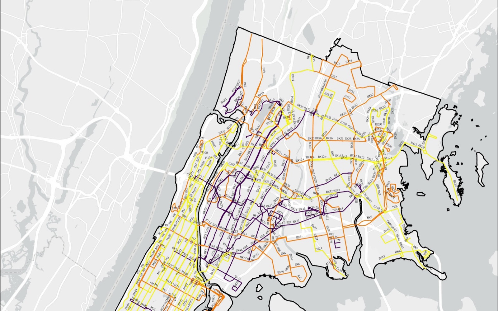
The problem
Battery-electric buses face two geographic constraints that diesel buses do not. Every climb draws more power, and current heavy-duty electric buses see significantly faster battery drain on routes where more than 15 percent of the length has a gradient steeper than 5 percent. And an articulated MTA electric bus has a real-world range of about 150 miles on one charge, which several Bronx and Manhattan routes approach or exceed once the full daily cycle from depot to depot is modelled. Where a route carries both penalties, its effective range shrinks further.
The research question: how do topography and route distance dictate the physical feasibility of converting MTA bus routes in Manhattan and the Bronx to battery-electric vehicles, and where should mid-route charging go to unlock the most constrained routes?
Data
- MTA bus routes: the polyline geometry and stops of every local, SBS and express route in the two boroughs, used to build each route's full depot-to-depot cycle.
- NYC 1-foot digital elevation model: bare-earth elevation at one-foot resolution, the finest public elevation data for the city, clipped to the study area.
- Nine bus depots from the NYC Facilities Database, verified against MTA records: Kingsbridge, Gun Hill, Eastchester, West Farms, Zerega, Mother Clara Hale, Manhattanville, Tuskegee Airmen and MJ Quill.
- GTFS static data for Bronx and Manhattan stops, to sum daily service miles per route.
- 2020 census tracts and NYSERDA's 2023 Disadvantaged Community boundaries for context.
Method
Five stages, each built on the output of the one before: data inputs, topographic modelling in Spatial Analyst, route and range modelling in Network Analyst, integration into a single hard-to-convert routes layer, and charging station siting with Location-Allocation.
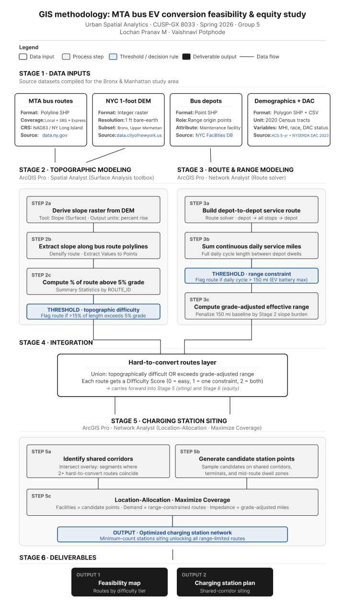
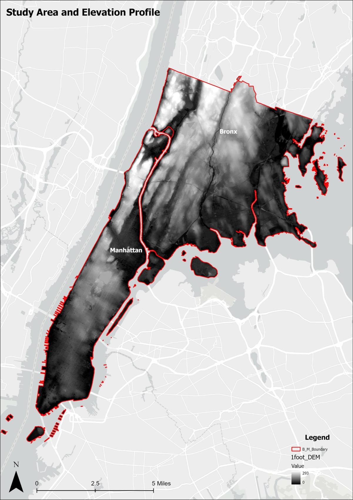
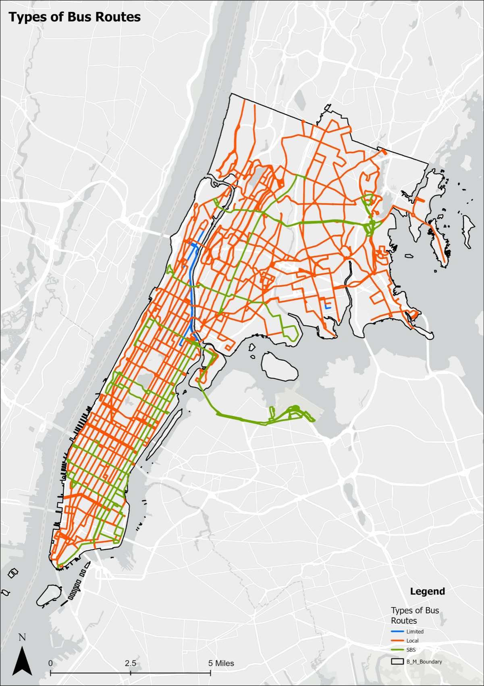
Stage 2: topography
Slope was derived from the elevation model and extracted along every route. Segments at a 5 percent grade or steeper were isolated, and a Percent_Difficult field on the route totals table records what share of each route is steep terrain: steep frequency divided by total frequency, times 100. Routes above 15 percent were flagged as topographically difficult.
Stage 3: range
Daily miles per route came from the GTFS data, summed over the full cycle. A 150 mile range was the baseline for a healthy battery. Effective range takes the hill penalty off that figure, Eff_Range = 150 × (1 − Percent_Difficult / 100), and the range gap is daily service miles minus effective range.
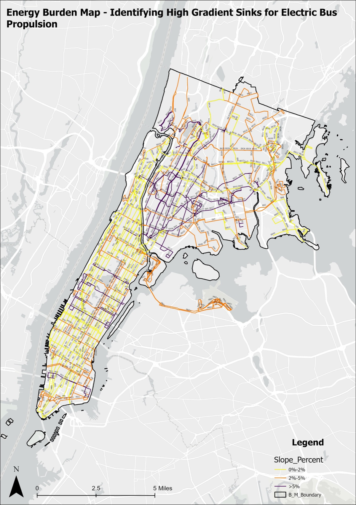
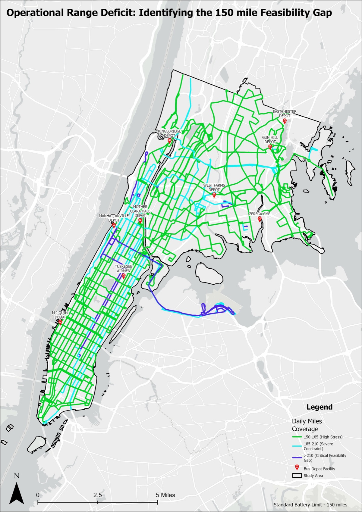
The depot pins matter. Routes from Kingsbridge and West Farms carry the heaviest cyan and blue concentrations, because those depots sit at the geographic edges of long service corridors. A long route becomes even more constrained when the depot it returns to is far from the middle of its service area.
Stage 4: where both constraints meet
Intersecting the two highest-stress layers gives the critical terrain intersections: the street segments where two or more constrained routes share the same steep ground. A battery stress score, daily miles divided by effective range, marks routes that would use more than all of their usable energy. Brown routes fail both tests. Blue routes exceed the range limit but stay on manageable gradients, so one charging stop is likely enough. The yellow dots are the shared segments, and they become the candidates for charging.
Stage 5: siting five stations
Hot spot analysis (Getis-Ord Gi*) ran on the intersection counts with a fixed distance band of 1,320 feet, a quarter mile. Only sites in the 99 percent confidence bin went forward as candidates. Location-Allocation in Network Analyst, with the Maximize Coverage problem type and a distance cutoff, then picked the subset of candidates that serves the most at-risk routes while keeping an operational distance from existing facilities.
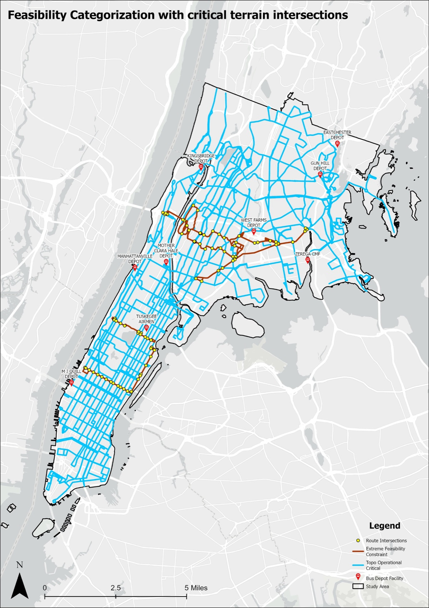
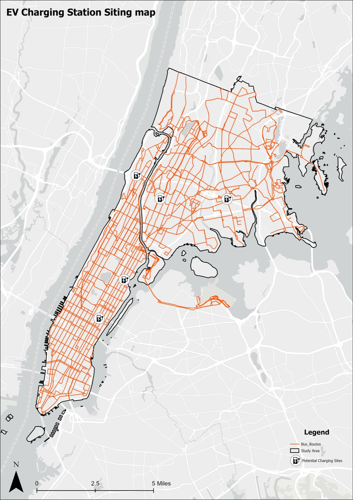
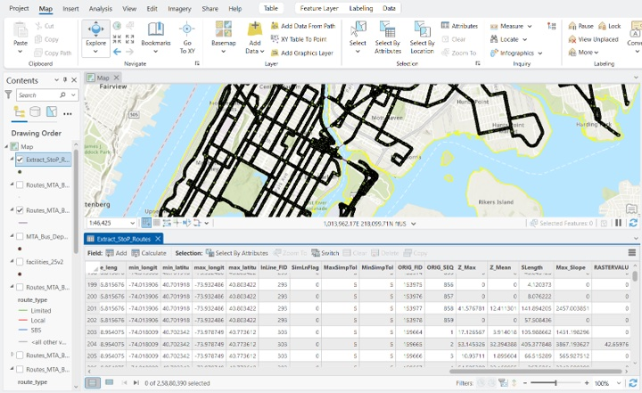
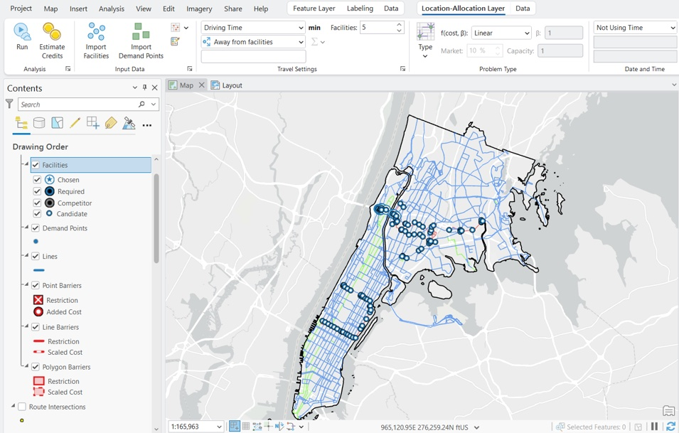
Findings
| 5 | charging stations on shared corridors, the minimum to unlock the hardest routes in the study area |
| 150 mi | real-world range of an articulated electric bus, the baseline that most routes already exceed |
| 9 | depots serving Manhattan and the Bronx; Kingsbridge and West Farms carry the heaviest range burden |
| 293 ft | highest ridge elevation in the Bronx, the root cause of the terrain penalty |
Topographic difficulty concentrates in the western and central Bronx, through Morris Heights, Fordham and the Grand Concourse corridor, and at the northern tip of Manhattan. Range constraint is widespread: most routes exceed the 150 mile daily cycle before any terrain penalty is applied. The two compound each other, so the grade-adjusted range of the hardest routes is meaningfully below the manufacturer figure. The pattern mirrors what Los Angeles Metro found, and supports Santiago's approach of mapping constraints before setting a conversion schedule.
Recommendations
- Run a network-wide spatial feasibility assessment before finalising the conversion timeline, extending this method to all five boroughs.
- Fund shared-corridor charging stations as foundational infrastructure rather than optional additions: one station serves several routes at once.
- Plan with grade-adjusted range, not the flat manufacturer specification, so hilly routes get the infrastructure they need before buses enter service.
Limitations
The study measures two physical constraints. Grid capacity at each depot, capital costs, fleet replacement schedules, winter battery performance and training are outside it, and the five stations solve routing feasibility, not the wider infrastructure question. The study area is Manhattan and the Bronx; Staten Island would likely show stronger patterns. Next steps: all five boroughs, a cost model for the priority stations, and a test of the solver's sites against MTA operations.
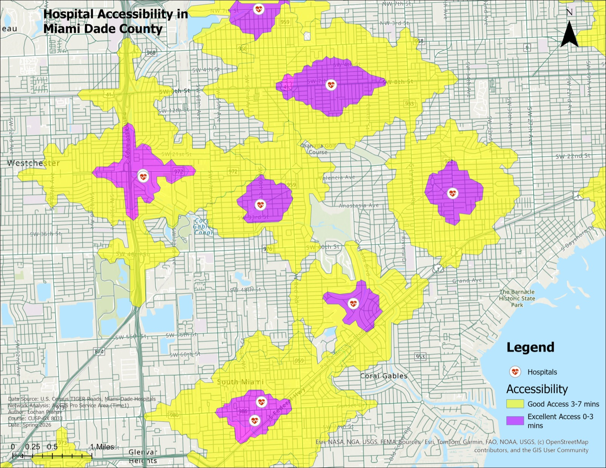